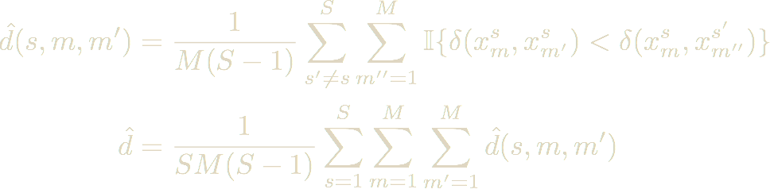

class: center, middle name:opening ## Optimal Decisions for Discovery Science <br> <br> Shangsi Wang, Greg Kiar, Eric Bridgeford, Zhi Yang, Xi-Nian Zuo, Michael Milham, Cameron Craddock, William Gray Roncal,Consortium for Reliability and Reproducibility, Carey E Priebe, [Joshua T Vogelstein](mailto:jovo@jhu.edu) <br> <br> these slides: <http://docs.neurodata.io/discriminability> --- ### Decision making is key <br><br> 1. which scanner? 2. which sequence? 3. which algorithms? -- <br> #### All impact bias and variance for downstream inference --- ### Statistical Decision Theory <br><br> Given predictors X, and a desire to predict Y with minimal error, we seek the function f that satisfies <center></center> -- Note, expectation is with respect to the *joint* distribution of x and y --- #### Limitations of Statistical Decision Theory <br><br> 1. must specify Y and loss function (e.g. || . ||) 2. requires knowing or estimating the joint distribution P(X,Y), which can be very high dimensional -- <br><br> In **reference datasets**, the predictors might be used for a wide variety of inference tasks! --- ## Goal <br><br> Devise a statistical framework for guiding decision making with the following properties: 1. does not require knowing Y a priori 2. does not make any parametric assumptions 3. can operate on any kind of data, vectors, images, graphs, etc. 4. has strong theoretical support 5. simulations reify theoretical claims 7. works as expected in real data applications 6. is statistically and computationall efficient --- ## Discriminability <br><br> Assume we have M measurements from each of S subjects. <!-- How frequently are multiple measurements from the same subject more similar to one another than they are to measurements from other subjects. --> How frequent are within-subject differences smaller than between-subject differences? Let x<sup>s</sup><sub>m</sub> denote the m-th measurement of subject s  <!-- \hat{d}(s,m,m')&=\frac{1}{M(S-1)} \sum_{s' \neq s}^S \sum_{m''=1}^M \mathbb{I} \{ \delta(x^s_m, x^s_{m'}) < \delta(x^s_m, x^{s'}_{m''}) \} \\ \hat{d}&=\frac{1}{SM(S-1)} \sum_{s=1}^S \sum_{m=1}^M \sum_{m'=1}^M \hat{d}(s,m,m')--> --- ### Why We Want Discriminability <br><br> Assume the following generative model for each subject: - z is the true property of subject - x is the noisily measured and processed predictor - y is a thing we want to predict <!-- - z ~ f_z - x = g(z) - y = f(x) --> To ensure our prediction of y is *stable*/*reproducible*, so should our estimate of x In other words, the more *discriminable* x is, the more we can trust its predictions --- #### Discriminability Bounds <br><br> - d = 0.5 <!-- multiple measurements of subject s are **no** more similar to one another as they are to other subjects' measurements --> - subject level predictions will be at chance, .s[regardless of y] -- <br><br> - d = 1 <!-- multiple measurements of subject s are **always** more similar to one another as they are to other subjects' measurements --> - subject level predictions can be optimal, .s[regardless of y] --- ### Theoretical Bounds <br><br> Theorem 1: Discriminability of x=g(z) bounds the best possible performance .s[regardless of y] (under suitable assumptions) <br> <center><img src="slide-images/bound.png" style="height: 120px;"/></center> --- ### Making Decisions <br><br> Corollary 1: If x is more discriminable than x', and its best predictive accuracy is better than possible for x', then it has a better bound <br> <center></center> --- #### Discriminability Finds Optimal Projection <center><img src="https://github.com/neurodata/discriminability/raw/master/Figs/simu2.png" style="width: 700px;"/></center> --- #### Discriminability Finds Optimal Threshold <br> <center><img src="https://github.com/neurodata/discriminability/raw/master/Figs/HCP_100.png" style="width: 700px;"/></center> --- #### Discriminability Makes Optimal Decisions <br> <center><img src="https://github.com/neurodata/discriminability/raw/master/Figs/mri_decs.png" style="width: 700px;"/></center> --- #### Discriminability Finds Optimal Pipeline <br> <center><img src="https://github.com/neurodata/discriminability/raw/master/Figs/fmri_rank_pv.png" style="width: 700px;"/></center> --- #### Discriminability for DTI Data <br> <center><img src="https://github.com/neurodata/discriminability/raw/master/Figs/comb_dti.png" style="width: 700px;"/></center> --- ### Reproducability Recommendations <br><br> 1. open data 2. data stored in standard specifications 3. open source code 4. code documented sufficiently to run 5. software dependencies 6. hardware dependencies --- ### How we did it <br><br> 1. all the data we used in this work is [open data](http://fcon_1000.projects.nitrc.org/indi/CoRR/html/samples.html) 2. we organized our data into [BIDS standard](http://bids.neuroimaging.io/) 3. our [pipeline](https://github.com/neurodata/ndmg) and [discriminability](https://github.com/neurodata/discriminability) code are open source 4. tutorials for [running pipeline](http://docs.neurodata.io/nddocs/mrgraphs/tutorials.html) 5. pipeline in [docker container](https://hub.docker.com/u/bids/) 6. that has been tested already on mac, ubuntu, and using singularity 7. all data derivatives are saved back to the original bucket --- class: middle, center <br> <center><img src="slide-images/bids.png" style="width: 800px;"/></center> --- class: middle, center # Questions? <br> <br> e: [jovo@neurodata.io](mailto:jovo@neurodata.io) w: [brainx.io](http://brainx.io) a: DARPA SIMPLEX ---